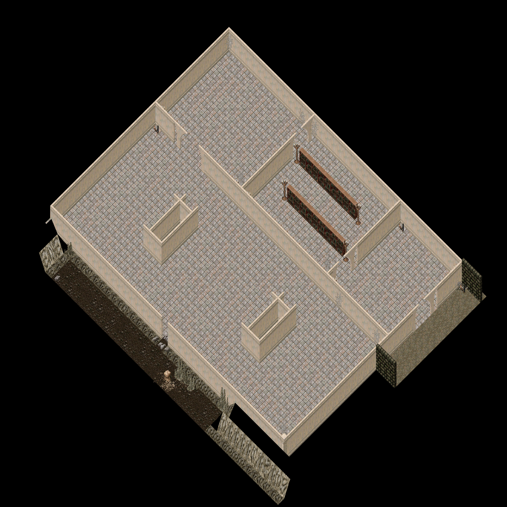
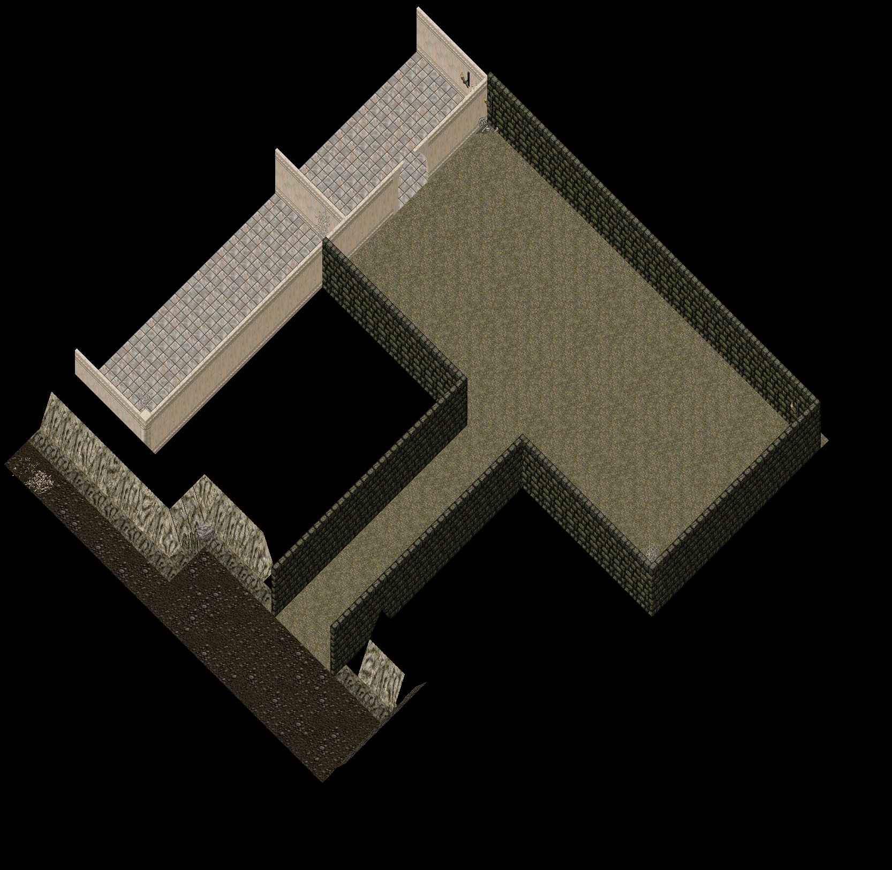

cc-P185, 2026-10-19. P141's approved layout built into a scratch copy of Trammel (outside both repos); nothing has touched the real map files. Drawn by scripts/mapbuild/isorender.py from the real tiles with the client's layout (no hues, no lighting). Round 1 (2026-10-18) is in round1/, round 2 in round2/, round 3 (the one you marked) in round3/.
| Mark | What was wrong | The fix |
|---|---|---|
| 1 | the west Strongroom block (5151-5153 x 1149-1154) read as an open three-sided box | ring pieces by the run rule (post, ew, ns, corner at its four corners) and a marble floor at Z 20 on all 18 tiles: a solid plinth (pillar-check.png, variant f) |
| 2 | Deposit Hall to Strongroom gap: half a tile of nothing between the wall and the pier at 5145,1143 | the tile before the gap keeps its run piece 0x00F9; the arch top 0x0114 on the first open tile, the pier 0x0113 only after the gap (OSI Nujel'm row 1323) |
| 3 | the east Strongroom block (5167-5169 x 1149-1154), the same open box | as mark 1 |
| 4 | Stacks to Deposit Hall gap: the pier at 5155,1132 stood half a tile off the north wall | run piece 0x00FA at 5155,1132, arch top 0x0116 at 5155,1133, pier 0x0115 at 5155,1135 |
| 5 | the wall torch at 5170,1132 drawn at floor height | Z 13 above the floor on the floor tile in front of the north wall (OSI: Deceit, Khaldun and Covetous mount every torch at floor + 13) |
| 6 | the Vault doorway: the pier at 5179,1136 stood off the wall above it | run piece 0x00FA at 5179,1136, arch top 0x0116 at 5179,1137, pier 0x0115 at 5179,1139 |
| 7 | arrow: the Landing torch at 5180,1132 at floor height | Z 13 |
| Mark | What was wrong | The fix |
|---|---|---|
| 1 | the tunnel mouth into the Warren: corner pieces at 5191,1161 and 5196,1161 put a slab stub across the end of each wall where it meets the rock | a run end takes its plain run piece 0x0242, as OSI ends a wall at rock (Wrong 5686,564; Khaldun 5440,1343) |
| 2 | the Vault doorway seen from the Landing: the north pier off the wall | as 1-vault mark 6 |
| 3 | where the marble Vault wall meets the dungeon brick wall (5179-5180, 1131) and the torch at 5180,1132 at floor height | the join is a T (walls W, E and S: the north run continues, ew; the pieces there were already right); the torch at Z 13 |
| 4 | the west stub where the tunnel leaves the Landing: a corner piece at 5191,1145 made a pocket in the mouth | walls W and S meet: the NE-corner piece, ew 0x0241 (OSI Deceit 5215,535) |
| 5 | the east stub at 5196,1145: a corner piece made a pocket in the mouth | walls E and S meet: the post 0x0244 (OSI Deceit 5190,562) |
| Mark | What was wrong | The fix |
|---|---|---|
| 1 | the tunnel mouth from the cave side: the stub across the wall end at 5191,1161 | plain run piece; the rock takes over on the next tile |
| Mark | What was wrong | The fix |
|---|---|---|
| 1 | the stone stubs of the descent to the Gloom (5165 and 5170, y 1229) each ended in a corner piece: a slab across the top of the stub into the rock | a run end into rock takes the plain run piece 0x01D1 (OSI Khaldun 5440,1340-1343) |
| Mark | What was wrong | The fix |
|---|---|---|
| 1 | the same at the descent to the Gloom (5213 and 5218, y 1229) | plain run piece |
| Mark | What was wrong | The fix |
|---|---|---|
| 1 | the lair's south-west corner at 5183,1257: a corner piece with a stub into the Gloom | walls N and E meet: ns 0x01D1 (the SW corner of an outline) |
| 2 | the descent from the Tangle: stubs at both ends of its walls (5165 and 5170 x 1229 at the rock; 5170,1233 where it opens into the Gloom) | run ends plain; 5170,1233 is an L (walls N and E): ns; 5165,1233 keeps its corner (walls N and W) |
| 3 | the lair's north-west corner at 5183,1237: a corner piece put two stubs into the corridor and the west hall | walls E and S meet: the post 0x01D2 (the NW corner of an outline; OSI Deceit 5190,562, Khaldun 5392,1320) |
| Mark | What was wrong | The fix |
|---|---|---|
| 1 | the descent from the Dawnseam: the same stubs | as 6-gloom-west mark 2 |
| 2 | the lair's north-east corner at 5227,1237: a corner piece with a stub up into the corridor | walls W and S meet: ew 0x01D0 (the NE corner) |
Made from the wall layer by scripts/mapbuild/junctions.py; the red diamond is the tile named in the caption. The builder reviewed every crop before this page was written (the count and what was fixed are in notes/cc-P185-cont-rootdeep-round4.md).
Every wall torch in Deceit, Khaldun, Covetous, Hythloth and the Terathan Keep stands on the floor tile in front of its wall, 13 to 15 above the floor, facing a wall directly north or west of it (150 of 150 in the surveyed blocks; 16 measured for Z).
| Round 3 | Round 4 |
|---|---|
 | |
| Round 3 | Round 4 |
|---|---|
 |  |
Marble: the wall tile before the gap keeps its run piece, the half arch 0x0114/0x0116 goes on the first open tile, the pier 0x0113/0x0115 replaces the run piece on the wall tile after the gap (Nujel'm row 1323 and column 3682; Magincia column 3716). Stone (the lair mouth): 0x01D8 on the first open tile, 0x01D9 after (Terathan Keep column 5431). Cave gaps: a stalagmite or crystal on the rock either side. Passages between two floors (the Brood Pit mouth, the tunnels) have no wall line and stay plain.
x 5174-5209, y 1128-1166 (36 x 39 tiles). The Landing (safe), the arrival, the ankh wall, the Vault doorway at x 5179 with its marble arch, and the tunnel south to the Warren. 480 KB
x 5138-5182, y 1128-1164 (45 x 37 tiles). The Vault (tutorial only): Counting Room, the Stacks with its two bookcase rows, Deposit Hall, the Strongroom with its two solid pillars, the three arched gaps, the crawlway in the south wall at x 5160. 582 KB
x 5140-5190, y 1158-1200 (51 x 43 tiles). The Warren, west: Crawl Den (the crawlway lands at 5160,1162) and the Great Burrow west half. 974 KB
x 5182-5244, y 1158-1198 (63 x 41 tiles). The Warren, east: Tunnel Foot (the landing tunnel lands here), the Great Burrow east half, and the Brood Pit through its mouth at x 5209-5211. 910 KB
x 5138-5196, y 1194-1236 (59 x 43 tiles). The Tangle (tier 2): the root cavern with its five rock-and-log root masses, the Thicket behind its framed gap at x 5157, the passage east to the Dawnseam. 1017 KB
x 5190-5246, y 1194-1236 (57 x 43 tiles). The Dawnseam (tier 2): the crystal seam with its five crystal clusters, the Seam Heart behind its framed gap at x 5227. 783 KB
x 5146-5201, y 1226-1264 (56 x 39 tiles). The Gloom, west half (tier 3): the descent from the Tangle, the ring tunnels, two web masses, the lair mouth at x 5183 with arch (a) and the webs. 712 KB
x 5190-5240, y 1226-1264 (51 x 39 tiles). The Gloom, east half: the descent from the Dawnseam, the Queen's lair with its two web pillars, the east and south runs. 670 KB
Every static placed is in notes/cc-P167-tools/statics-placed.csv; land by id and Z in land-summary.csv; the rules (seeds, weights, clusters, corners, frames, torches, the pillar top) in plan-sets.json; the builder is build_burrows.py on scripts/mapbuild/ (the wall rule in walls.py, the junction sheet in junctions.py), the renders render_burrows.py; the checklist, the mark table and the OSI measurements in notes/cc-P185-cont-rootdeep-round4.md.